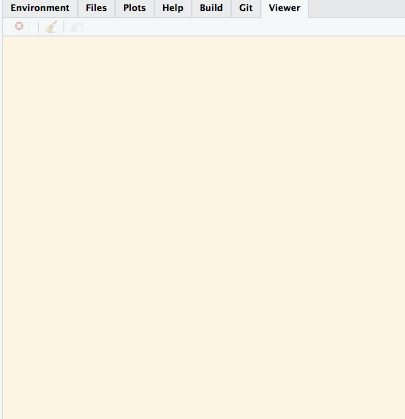
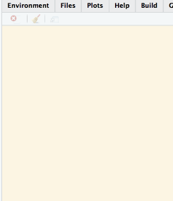
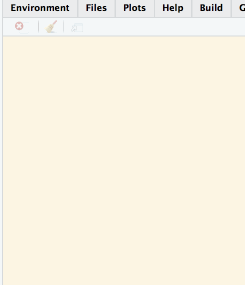

Tutorial 3a: A 15 minutes introduction to p5.js
Jackson Kwok
2017-11-16
1.1 Introduction
In this tutorial, we are going to learn a simple, yet powerful JS library calledp5.js [1]. The goal of the tutorial is to learn the basics of p5.js in preparation for creating the following two apps:


For the app on the left, the “parameter domain” canvas is created using p5.js, and the right canvas is created using plotly.js. For the app on the right, the entire canvas is created using p5.js. p5.js provides many easy-to-use functions to construct simple geometric objects and manage the mouse events. These are what we are going to learn today.
1.2 Basic structure and Common functions of p5.js
Structure
The basic setup of p5.js consists of the functions setup and draw. As the names suggest, the first function sets up a canvas, and the second function draws on it (60 times per second).
Example 1
library(magrittr)
library(jsReact)
my_html <- create_html() %>%
add_js_library("p5") %>%
add_script(
"
function setup() {
createCanvas(800, 800); //width, height
}
function draw() {
ellipse(50, 50, 80); //circle: x, y, radius
}
")
preview_app(my_html)Since we are drawing the same circle over and over again, it doesn’t show you the browser is really doing work. Try this instead:
Example 2
my_html <- create_html() %>%
add_js_library("p5") %>%
add_script(
"
function setup() {
createCanvas(800, 800); //width, height
}
var sigma = 10, beta = 8/3, rho = 28;
var x = 1, y = 1, z = 1, dt = 0.015;
var new_x, new_y, new_z;
function draw() {
// Lorenz system
new_x = x + (sigma * (y-x)) * dt;
new_y = y + (x * (rho - z) - y) * dt;
new_z = z + (x * y - beta * z) * dt;
x = new_x, y = new_y, z = new_z;
// Plot
ellipse(200 + 5 * x, 200 + 5 * y, 10); //circle: x, y, radius
}
")
preview_app(my_html)
Note that all the “magic” really comes from the underlying calculation rather than the plotting function. As we go on, we will see this more often, i.e. the ‘interestingness’ of the app comes from the models in R rather than from the graphics. It’s a good time to clarify that this package is not created to do fancy graphics but to enable us to express our insights using the visual language.
Isolating the R code and the JS code
As you may have noticed, in the last two examples the html interface actually hasn’t changed; what has changed is only the JS part. It seems sensible to introduce here a way to isolate / compartmentalise the two parts so that we don’t have to include the R codes every time. For instance, we could rewrite example 1 as follows.
First we put the JS part into a file my_script.js.
// my_script.js
function setup() {
createCanvas(800, 800); //width, height
}
function draw() {
ellipse(50, 50, 80); //circle: x, y, radius
}Then in the R code, we change the add_script function call to add_script_from_file.
my_html <- create_html() %>%
add_js_library("p5") %>%
add_script_from_file("my_script.js")
preview_app(my_html)From here onward, we will only show the JS code, understanding that the html part and the R code stay the same.
Common functions
We will only go through a small set of functions offered by p5.js, just enough to create the apps I mentioned at the beginning. For the full list of functions, one can consult this.
Creating geometric objects: rect, line, ellipse
function setup() {
createCanvas(400, 400); //width, height
}
function draw() {
ellipse(50, 50, 80); //circle: x, y, radius
rect(10, 10, 20, 20); //rectangle: x, y, width, height
line(60, 120, 80, 160); //line: x1, y1, x2, y2
}A nice feature about p5.js is that everything is pretty self-explanatory. What else can I add really?
Managing the mouse events: mouseIsPressed, mouseX, mouseY
function setup() {
createCanvas(800, 800); //width, height
}
function draw() {
if (mouseIsPressed) {
ellipse(mouseX, mouseY, 30); //radius: 30
}
}In the above, draw monitors if there is a mouse click; if so, it will plot a point at the mouse position given by mouseX, mouseY. Since draw updates the canvas 60 times a second, you won’t notice any delay.
 

1.3 Summary
In this tutorial, we have learnt some basics of p5.js. This includes:
the structure: it consists of two key functions
setupanddraw, andsome common functions:
rect, lineandellipsefor creating simple geometric objects,mouseIsPressed, mouseXandmouseYfor managing mouse events.
Now we are ready to move on to example 3 and example 4! See you in the next tutorial.